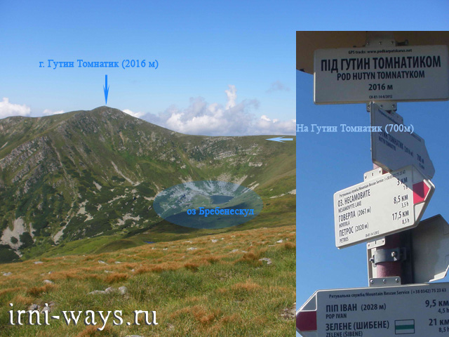

Одна з найвищих гір в Україні, вершина південно-західного відрогу Чорногори. Висота 2016 м. Розташована у Рахівському районі Закарпатської області, в межах Карпатського біосферного заповідника (Чорногірський заповідний масив). На північно-східному схилі між горою Гутин Томнатик і Бребенескул у льодовиковому карі на висоті 1801 метрів над рівнем моря розташоване озеро Бребенескул. На південь від вершини розташоване урочище Полонина Бребенеска, на північ — гора Ребра, на схід — Бребенескул. Значний вплив на рельєф гори мав льодовик. На горі зростає субальпійська й альпійська рослинність з великою кількістю рідкісних і реліктових видів. Найближчі населені пункти: с. Говерла (Закарпатська область) і с. Бистрець (Івано-Франківська область).
На Гутин Томнатик піднімаються заради озера Бребенескул. Ця вершина навіть ближче до самого високогірного озера Карпат, ніж та, чиє ім'я вона носить. Назва Гутин Томнатик, мабуть, прийшло з дакийского мови і означає "Сивий Верх". Що ж, справедливо - взимку гора "сивіє". Основна хребтова стежка Чорногорою обходить стороною цю вершину. Однак при бажанні на Томнатик можна і піднятися, заломивши гак на 1,5 кілометра.
Найживописнішим житлом на є надзвичайне озеро, утворене внаслідок древнього льодовика і вулканічних вивержень. Його легко виявити на північно-східному схилі в одній із западин. Називається озеро Бребенескул в честь однойменної гори, щільно прилягає зі сходу до Гутин Томнатик. Це красиве озеро, глибина якого досягає до 3 метрів і розташоване воно на висоті 1800 метрів.
Навколо водойми зелені килими стін і стрімкі скелі, утворені льодовиком тисячі років тому. Рослинність в основному складається з рідкісних видів трав і диких квітів. У період літніх місяців починається активне цвітіння, яке супроводжується теплим сонцем і співом гірських птахів. Поблизу можна зійти з туристичного маршруту на гору Лисина в Рахівському районі Закарпаття.
